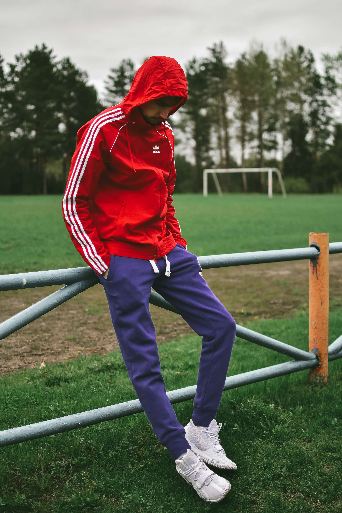

Slitstarkt syntetiskt läder (PU) med en mjuk, mocka-liknande känsla vid tån. 50% av materialet är återvunnet.
Lättviktig EVA-skumkonstruktion för grundläggande stötdämpning och komfort.
Non-marking gummi med fiskbensmönster vid häl och tå för grepp.
Utbytbar, formskuren innersula i OrthoLite®-liknande material för komfort och fukthantering.
Klassisk bomull/polyester-blandning.
Fritid/Livsstil (Lifestyle)
Normal (Medium bredd) Kan upplevas som något snäv i framfoten initialt.
Modell-ID FW6789-A.
Färgnamn: Core White / Bold Green.
Vikt Ca 320g.
Klassiska 3-Stripes i kontrasterande färg på sidan. Vadderad plös och hälkrage.
Fullända din street-look. Dessa klassiska skor matchas bäst med en avslappnad hoodie och slim-fit byxor. Se vår model nedan, du hittar hela looken hos oss!
Foto av Maxim Mushnikov på Unsplash.